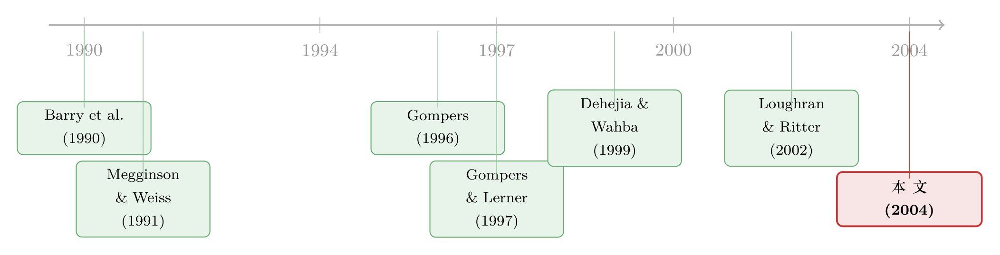

「认证」的反面：原来风投把新股「打折」得更狠
本文读的是 Lee & Wahal (2004, Journal of Financial Economics)：在纠正了「拿不拿风投钱」这个内生选择之后，结论翻了个个儿——有风险投资 (venture capital, VC) 背书的 IPO，首日回报反而更高，1980–2000 年间平均高出 5.0 到 10.3 个百分点。作者把这笔「自愿多让的钱」归因于 Gompers (1996) 的「抢风头假说」(grandstanding)：年轻的风投基金愿意忍受更深的抑价，因为把公司送上市这件事本身，能替它换来下一轮更大的募资。
1 一个被讲反了的故事
先讲一个几乎写进了所有公司金融课本的「常识」。
一家创业公司要上市，新股的发行价往往定得低于它在二级市场第一天收盘的价格——这个差额，就是所谓的 IPO 抑价 (underpricing)，也叫首日回报 (first-day return)。钱就这么白白「留在了桌上」(money left on the table)，从老股东流向了打新的人。那么，有没有什么办法能让发行价定得更准、把这笔损失压下去？
一个很自然、也很动听的答案是：找个风险投资人来背书。Megginson and Weiss (1991) 给出了这套逻辑的经典版本，他们称之为认证假说 (certification hypothesis)：风投是市场上的老手，反复跟承销商、机构打交道，声誉是它吃饭的本钱；它愿意用自己的声誉替这家公司「担保」真实价值，于是信息不对称下降，发行价可以定得更靠谱，抑价自然就更低。他们在 1983–1987 年的样本里确实看到，VC 背书的 IPO 首日回报比配对的非 VC 公司低 4.8 个百分点（t = 3.6）。Barry et al. (1990) 从监督的角度也给出了相互印证的相关性：风投持股越多、董事会服务越久、参与的风投家数越多，抑价越低。
故事到这里很完美：风投是好东西，它让新股定价更公道。
但真正关键的一步在于——这套故事的前提，本身可能就是错的。
2 为什么不能直接比？——选择，而不是处理
问题出在「拿不拿风投的钱」这件事，根本不是天上掉下来的随机分配。
Sahlman (1990) 报告过一个数字：一家典型的大型风投每年会收到上千份商业计划书，最后只投十来家。Kaplan and Stromberg (2002) 则用细颗粒的数据描绘了风投在掏钱之前做的尽职调查有多繁琐——风险怎么映射成合约条款、现金流权与控制权怎么在创业者和投资人之间分配（Sahlman, 1990；Gompers and Lerner, 1996；Black and Gilson, 1998；Hellman, 1998）。换句话说，接受风投融资是一场漫长讨价还价的结果，是一个内生选择 (endogenous choice)，绝非随机。
这意味着什么？意味着 VC 背书的公司和非 VC 公司，在被风投挑中之前就已经长得不一样了。Lee and Wahal 在 6,413 家 1980–2000 年的 IPO（其中 2,383 家、约 37% 是 VC 背书）里看得很清楚：风投的钱高度集中地流向了软件、生物等技术密集型行业，一半以上的 VC 背书公司总部扎在加州、马萨诸塞和德州；而且风投带上市的公司普遍更小、更年轻、收入更低、更不容易盈利，但承销商质量却更高。
于是问题来了：你拿一家「被风投千挑万选出来的科技初创」去和一家「随便一家上市公司」比首日回报，比出来的差异，到底是风投这个「处理」(treatment) 的效果，还是这两类公司本来就不同所带来的选择性偏差 (selectivity bias)？
这正是 LaLonde (1986) 的著名教训：忽略内生选择的传统计量手段，给出的估计可能不仅是「不准」，而是符号都反了。Lee and Wahal 引的另一个例子来自 Ackerberg and Botticini (2002)——文艺复兴时期托斯卡纳地主与佃农之间的合约选择若是内生的，就会严重扭曲那些本想刻画风险厌恶的系数。
所以，认证假说的旧证据未必是「认证在起作用」，很可能只是「风投挑走了那些本来抑价就低的公司」。要把这两件事掰开，必须先把「选择」这一关过了。
3 识别策略：用「倾向得分」给反事实找替身
Lee and Wahal 没有沿用「OLS 加一个 VC 虚拟变量」或「按行业、规模一对一配对」的老路——那两种做法都默认了只要控制住可观测特征，剩下的差异就能归给风投。他们转而借用了项目评估文献里处理内生处理的整套工具：Rubin (1974, 1977)、Rosenbaum and Rubin (1983)、以及把它发扬光大的 Dehejia and Wahba (1999)。
核心直觉分两步。
第一步，把「是否接受风投」这件事显式地建模。 用一个第一阶段回归（probit/logit）去预测每家公司拿到风投融资的概率，这个概率就是 Rosenbaum and Rubin (1983) 提出的倾向得分 (propensity score)。它把「公司在被挑中前就不一样」的那些维度——规模、年龄、行业、盈利能力、承销商质量等——压缩进了一个单一的数。
第二步，按倾向得分给每一家 VC 背书公司找「替身」。 在非 VC 公司里，挑出那些倾向得分最接近、也就是「本来同样有可能被风投相中、但实际没被相中」的公司，作为它的反事实 (counterfactual)。两者首日回报之差，才是更干净的「风投效应」。这套方法的好处是不强加线性或函数形式：你不是在拟合一条直线，而是在可比的样本里做差。
想象一个理想世界：同一家公司，我们既能看到它「拿了风投」时的抑价，又能看到它「没拿风投」时的抑价。两者相减就是因果效应。现实里我们永远只能看到其中一个，所以匹配法的全部努力，就是给那个看不见的「平行世界」找一个尽可能像的真人替身。
把这一步做扎实之后，结论彻底反转了。
4 反转：风投让新股「打折」得更狠
先看一个最朴素、还没做内生纠正的对照（论文表 1）。整个 1980–2000 样本里，VC 背书 IPO 的平均首日回报是 26.8%，而按 Megginson and Weiss 方法配对的非 VC 公司只有 19.4%，差出 7.45 个百分点，t 值 5.99。方向已经和认证假说相反了。
更有意思的是，作者复刻了 Megginson and Weiss 的 1983–1987 窗口：在这个子样本里，差异变成 −1.5 个百分点（t = 1.1）——风投确实「看起来」降低了抑价。1980 年代整个十年，差异是 −0.6 个百分点（t = 0.6）；1990 年代（剔除 1999）是 −0.5 个百分点（t = 0.5）。也就是说，早期文献的结论并没有错，错的是把一个特定年代、特定方法下的结果，当成了普世规律。Ritter and Welch (2002) 早就提醒过，IPO 的很多现象都是非平稳的。
那 1999–2000 呢？这两年是另一个星球。1999 年 VC 背书 IPO 的首日回报比非 VC 高出 46.9 个百分点（t = 6.2），2000 年高出 32.2 个百分点（t = 4.6）。互联网泡沫把一切都放大了。
于是一个自然的担忧是：会不会整个结论都是泡沫两年撑起来的？ 作者把样本切开回答：
- 1999–2000：VC 与非 VC 的抑价差是
25.0个百分点（SE ≈ 9.9）； - 1980–1998：差是
2.0个百分点（SE ≈ 1.0），仍然显著。
注意，1980–1998 全样本的平均抑价只有 11.0%，所以这 2.0 个百分点相当于总抑价的近 20%。换个口径——用 Loughran and Ritter (2002b) 的「桌上留钱」度量：样本里非 VC 公司平均在桌上留了 $27 百万，用最保守的 5.0 个百分点估计，VC 公司平均多留了约 $10 百万；即便剔除泡沫，也还多留了约 $4 百万。
这就把问题逼到了墙角：风投上市后通常仍持有大量股权（Megginson and Weiss 报告 IPO 前平均持股 36.6%，上市后仍有 26.3%），更深的抑价对风投自己是实打实的财富损失。一个精明的、声誉至上的金融老手，为什么甘愿主动多让出这笔钱？
5 为什么甘愿吃亏：抢风头
作者排除了几个候选解释。
「投行拿热门新股的份额作交换」这种 quid pro quo？Loughran and Ritter (2002a) 确有此类例子，但主要发生在 1999–2000，而抑价差在更早的年份就存在了，解释不了全样本。
真正的答案，作者认为，是 Gompers (1996) 提出的抢风头假说 (grandstanding)。
逻辑链是这样的：风投以有限合伙基金的形式募资，每只基金寿命有限（通常十年），到期必须清盘、把钱还给养老金、捐赠基金这些有限合伙人 (limited partners)。而风投绝大部分回报来自把公司送上市。于是「能不能把组合公司带上市」就成了募下一只基金的命根子——Gompers 描述过：带不出 IPO 的风投募不到新钱，而一旦成功 IPO，往往很快就能再募一笔。
关键在于这件事对不同风投的分量不一样。对老牌、声誉已立的风投，募资不成问题；但对年轻、低声誉的风投，它急需一个「我能带公司上市」的信号，所以它更愿意忍受更深的抑价——把公司尽快推上市，哪怕便宜卖，也要把这块招牌挂出去。Gompers (1996) 因此发现年轻风投「抢风头」：带更年轻的公司上市、容忍更高的抑价，以此换取未来更多的募资。
如果这套机制成立，那么数据里应该出现两个可检验的含义：（一）抑价对低声誉风投的未来募资能力影响更大；（二）低声誉风投更倾向于带更小、更年轻的公司上市。
6 把机制钉死：募资回归
为检验含义（一），作者先给每个 IPO 认定一个「领投」风投——分别用「最早投资」和「投资额最大」两种定义做了两个子样本（稳健性）——然后跑 Gompers (1996) 式的募资回归：被解释变量是领投风投在该 IPO 之后募的下一只基金的规模；解释变量是风投声誉的代理（风投年龄、此前做过的 IPO 数）、IPO 抑价，以及二者的交互项。
结果有三层：
- 未来流入的资本与风投年龄、过往 IPO 数正相关——更有声誉的风投能募到更多钱；
- 未来资本也与抑价正相关——忍受抑价是有回报的，这正是「自愿吃亏」的经济动机；
- 最关键的是交互项为负：风投年龄 × 抑价、过往 IPO 数 × 抑价都是负的。也就是说，抑价对年轻、做过 IPO 少的风投的募资帮助更大。这正是抢风头假说的核心预言。
为检验含义（二），作者把两个声誉度量分别对 IPO 特征回归，发现年轻的、过往 IPO 少的风投，确实更倾向于带更小、更年轻的公司上市。
还有一个时代切口。1980–1996 年平均每年只有 33 家新风投入行，1997–2000 年猛增到每年 106 家。竞争加剧会不会改变在位风投「自愿吃亏换募资」的意愿？分子样本看：未来资本流对抑价的敏感度在后半段更高；而声誉与抑价的交互效应在两个时期都显著——横截面上的「年轻风投更肯吃亏」并没有变。
7 还有一道坎：抑价效应，还是 IPO 效应？
读到这里，一个挑剔的读者会立刻发难：抑价和「成功做成一单 IPO」是绑在一起出现的。你看到「抑价 → 未来募资上升」，会不会其实是「做成 IPO → 未来募资上升」，而抑价只是搭了顺风车？Loughran and Ritter (2002b) 的前景理论解释正指向这一点：发行人把抑价的损失和 IPO 整体的收益加总着看，于是干脆忽略了这块损失。
要把「抑价效应」从「IPO 效应」里剥出来，作者祭出了 Heckman (1979) 两阶段选择模型。他们编了一个覆盖 21 年、每年所有在世风投（包括做了 IPO 的和没做 IPO 的）的样本——抑价这个变量只有在公司被带上市时才观测得到，这本身就是一种可观测性偏差 (observability bias)。第一阶段预测某风投在某年是否做了 IPO，并把这个选择喂进第二阶段，第二阶段用 IPO 抑价去解释资本流入。结果：第二阶段里 IPO 抑价的系数为正且显著——即便纠正了「只在做成 IPO 时才看得到抑价」这层偏差，抑价对未来资本流入仍有独立的正向作用。Gompers (1996) 提过的另一个「回收假说」(recycling hypothesis)——老基金的盈利被同一家风投滚进新基金——则解释不了「为什么有些风投能拿到更多钱」「为什么抑价对低声誉风投影响更大」，因此被排除。
至此，抢风头假说不仅在符号上对得上，还顶住了内生性、可观测性、以及若干替代解释的轮番拷问。
8 文献脉络
把镜头拉远，这篇论文站在两条线的交汇处。
一条是 IPO 抑价这条主干：从 Ibbotson and Jaffe (1975)、Ritter (1984) 对「热发行市场」(hot issue market) 的刻画，到 Ritter and Welch (2002) 对 IPO 活动、定价与配售的系统综述，再到 Loughran and Ritter (2002a, 2002b) 关于「抑价为何越来越高」「发行人为何不在意桌上留钱」的追问。
另一条是 风投的角色：Megginson and Weiss (1991) 与 Barry et al. (1990) 立起了「认证 / 监督 → 降低抑价」的旗帜；Gompers and Lerner (1997) 随即质疑认证假说对样本期与方法高度敏感；Gompers (1996) 则另辟一路，提出抢风头假说，把风投行为放进「募资—声誉」的动态激励里去理解。
Lee and Wahal 的贡献，是把项目评估的因果推断工具（Rubin, 1974；Rosenbaum and Rubin, 1983；Dehejia and Wahba, 1999；LaLonde, 1986）引进这场争论，用纠正内生性的匹配法，把「认证 vs. 抢风头」这桩公案翻了案：认证不是普世规律，抢风头才是贯穿全样本的主线。

（关于风投到底「赚没赚到钱」这个更上游的问题，可参见《看上去赚翻了的风险投资，其实只是一把彩票》；关于抑价与上市后流动性的关系，可参见《打折卖新股，是为了补偿你「将来不好脱手」的那份担心》；关于「7% 承销费」这把固定尺子如何左右新股定价，可参见《7% 这把「固定的尺子」，竟能改写新股的价格》。）
9 评论与延伸（Q&A + 研究方向）
(a) 几个可能的疑问
Q：认证假说被「证伪」了吗？还是只是被限定了适用范围？
更准确地说是被限定了。在 1983–1987 这个 Megginson and Weiss 的原始窗口里，VC 背书的抑价确实低
1.5个百分点；1980 年代整体也是负的。Lee and Wahal 没有否认那段历史，而是证明了认证效应不是普世、稳定的规律——一旦把样本拉长到 2000 年并纠正内生性，主导力量就变成了抢风头。两套机制可能并存，只是相对强弱随时代而变。
Q：匹配法（倾向得分）真的解决了内生性吗？
只解决了可观测那一半。倾向得分匹配依赖「在可观测特征给定后，处理近似随机」(selection on observables) 这个假设；如果还有不可观测的因素同时决定「被风投相中」和「抑价」，偏差依然在。作者也清楚这点，所以才补了一句「没有任何内生性纠正或控制是完美的」，并用多种设定、多种领投定义反复验证。但严格的因果，匹配法给不了。
Q：为什么风投会「自愿」承受财富损失？这不反常吗？
关键在于风投不是一锤子买卖。它持续地募资—投资—退出，单只基金的抑价损失，要放进「这次成功上市 → 声誉 → 下一只基金更大」这条多期收益里去算。对年轻风投而言，用一笔确定的、当期的抑价损失，换一个能显著放大未来管理费基数的信号，是划算的。这恰恰是交互项为负的经济含义。
Q：1999–2000 的泡沫，会不会污染了整个结论？
作者专门做了切割。剔除泡沫两年后，1980–1998 的抑价差仍有
2.0个百分点且显著，相当于该期总抑价的近20%；募资回归里的交互效应在 1980–1996 和 1997–2000 两段都显著。所以结论不是泡沫独家撑起来的，泡沫只是把它放大到了25个百分点的极端。
Q：抑价对未来募资的正向关系，会不会只是「做成 IPO」这件事本身的功劳？
这正是 Heckman 两阶段模型要回答的。把「只有做成 IPO 才观测到抑价」这层选择显式建模后，第二阶段里抑价的系数依然为正且显著——抑价有独立于「是否上市」的解释力，不只是 IPO 效应的影子。
Q：这对今天的创业者意味着什么？
一个微妙的提醒：风投的利益和创业者并不完全一致。当一家年轻风投急于「立招牌」时，它可能更乐意接受一个偏低的发行价，因为抑价的代价主要由老股东（含创业者）分摊，而上市带来的声誉收益却归风投独享。选风投时，对方的「资历」不只是能力信号，也可能是动机信号。
(b) 几个可能的研究问题与提案
1. 抢风头会不会蔓延到债券市场？
【经济故事】高收益债 (high-yield) 的承销商同样靠声誉吃饭，新进的承销商是否会用「首笔成交折价」(参见《新债上市第一笔成交，凭什么白赚 47 个基点？》) 去建立招牌、换取后续发行业务？这等于把抢风头从股权一级市场搬到信用一级市场。 【可行性】中。TRACE 能给出债券上市后的首日/首周价格变动，承销商身份与历史发行量可从 SDC/Mergent 构造声誉代理；难点是债券「抑价」的度量噪声大、且一级配售信息不透明。识别上可借鉴本文的匹配法。
2. 外资风投 vs. 本土风投的抢风头强度差异。
【经济故事】外资风投在东道国声誉积累的边际价值可能更高（要打开一个陌生的 LP 与 deal 网络），按本文逻辑，它们或许更愿意「抢风头」，带更年轻的公司上市、容忍更深的抑价。 【可行性】中。跨国 VC-IPO 数据可由 VentureXpert/PitchBook 拼出，本土 vs. 外资的区分清晰；挑战在于跨国制度差异（法律、上市门槛）需要大量固定效应来吸收，识别外资身份的外生性也需小心。
3. 新风投入行潮（1997–2000）作为竞争冲击的准自然实验。
【经济故事】本文已经观察到 1997 年后入行风投翻三倍、且抑价对募资的敏感度上升。能否把这波进入当作对在位风投的竞争冲击，更干净地识别「竞争 → 抢风头强度」的因果，而非仅做子样本对比？ 【可行性】中偏低。进入潮本身是内生于互联网热潮的，很难找到与 IPO 市场无关的进入外生变动；可考虑用地区层面（如不同州的 VC 集聚）的进入差异叠加双重差分，但平行趋势是硬伤。
4. 抑价的「桌上留钱」最终落在谁头上？
【经济故事】本文算出 VC 公司平均多留
$10百万在桌上，但没拆这笔钱在创业者、早期员工、与不同轮次 LP 之间如何分摊。把招股书里的持股结构接上，可以量化抢风头的「再分配」后果。 【可行性】高。招股书（S-1）披露上市前后的持股比例，结合首日回报即可分摊；数据公开、口径清晰，是一个 doable 的描述性 + 横截面项目。
参考文献
- Barry, C., Muscarella, C., Peavy, J., Vetsuypens, M. (1990). The role of venture capital in the creation of public companies: evidence from the going-public process. Journal of Financial Economics 27, 447–472.
- Black, B., Gilson, R. (1998). Venture capital and the structure of capital markets: banks versus stock markets. Journal of Financial Economics 47, 243–277.
- Bradley, D., Jordan, B. (2002). Partial adjustment to public information and IPO underpricing. Journal of Financial and Quantitative Analysis 37, 595–616.
- Dehejia, R., Wahba, S. (1999). Causal effects in non-experimental studies: evaluating the evaluation of training programs. Journal of the American Statistical Association 94, 1053–1062.
- Gompers, P. (1996). Grandstanding in the venture capital industry. Journal of Financial Economics 42, 133–156.
- Gompers, P., Lerner, J. (1997). Venture capital and the creation of public companies: do venture capitalists really bring more than money? Journal of Private Equity, 15–32.
- Heckman, J. (1979). Sample selection bias as a specification error. Econometrica 47, 153–161.
- LaLonde, R. (1986). Evaluating the econometric evaluations of training programs with experimental data. American Economic Review 76, 604–620.
- Lee, P. M., Wahal, S. (2004). Grandstanding, certification and the underpricing of venture capital backed IPOs. Journal of Financial Economics 73(2), 375–407.
- Loughran, T., Ritter, J. (2002b). Why don't issuers get upset about leaving money on the table in IPOs? Review of Financial Studies 15, 413–443.
- Megginson, W., Weiss, K. (1991). Venture capitalist certification in initial public offerings. Journal of Finance 46, 879–903.
- Ritter, J., Welch, I. (2002). A review of IPO activity, pricing and allocations. Journal of Finance 57, 1795–1828.
- Rosenbaum, P., Rubin, D. (1983). The central role of the propensity score in observational studies for causal effects. Biometrika 70, 41–55.
- Sahlman, W. (1990). The structure and governance of venture-capital organizations. Journal of Financial Economics 27, 473–521.